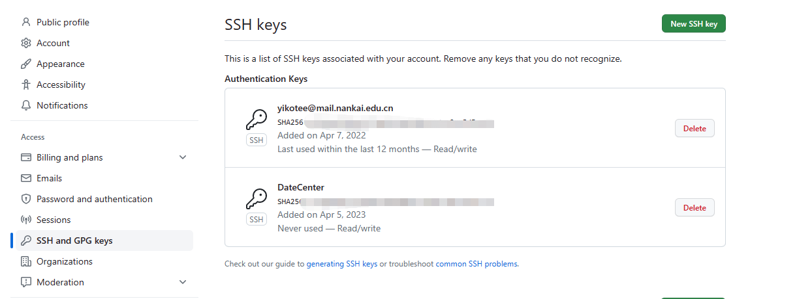

Git仓库使用配置
配置Git
ssh-keygen -t rsa -C "yikotee@mail.nankai.edu.cn" ---本地创建ssh key
将生成的key添加进GitHub的Account Setting中 
验证是否添加成功
ssh -T git@github.com
设置commit username和email
git config --global user.name "lch"
git config --global user.email "yikotee@mail.nankai.edu.cn"
添加远程地址
git remote add origin https://github.com/yikotee/Andromeda.git
本地仓库上传到远程仓库
git init ---初始化本地仓库
git add --all ---将代码添加到本地仓库
git status ---查看本地仓库状态
git commit -m "index第一次提交" ---项目提交说明
git push -u origin master ---把本地仓库代码推送到远程仓库
删除远程仓库代码
git pull origin master ---将远程仓库代码拉下来
dir ---查看都有哪些文件
git rm -r --cached index.html ---删除index.html文件
git commit -m "删除了index.html" ---提交操作说明
git push -u origin master ---提交本次更新